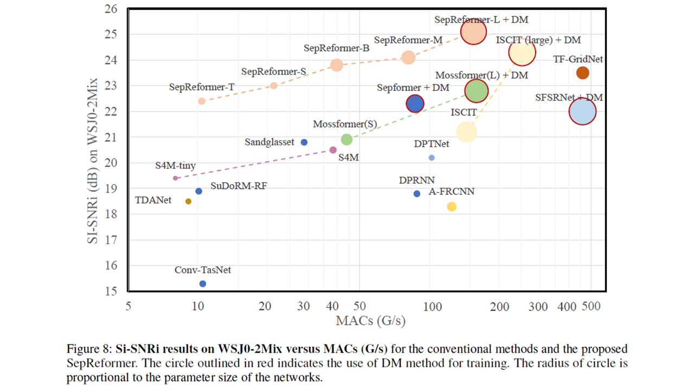
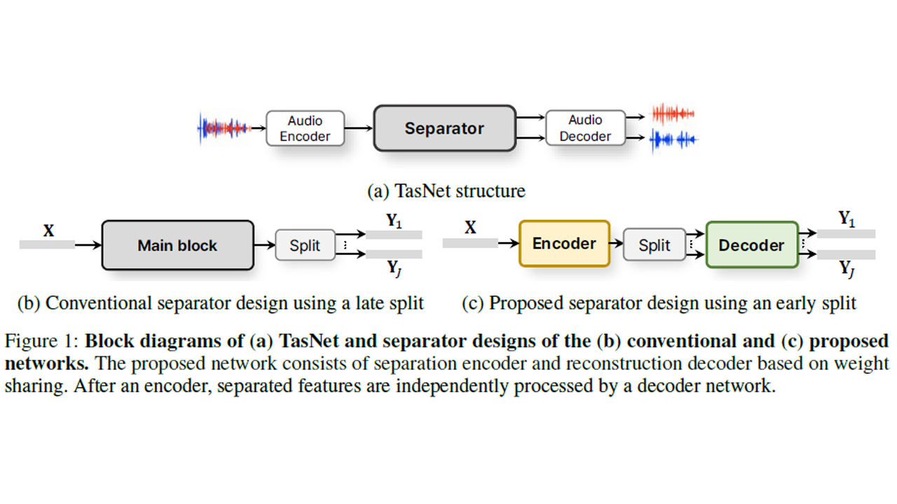
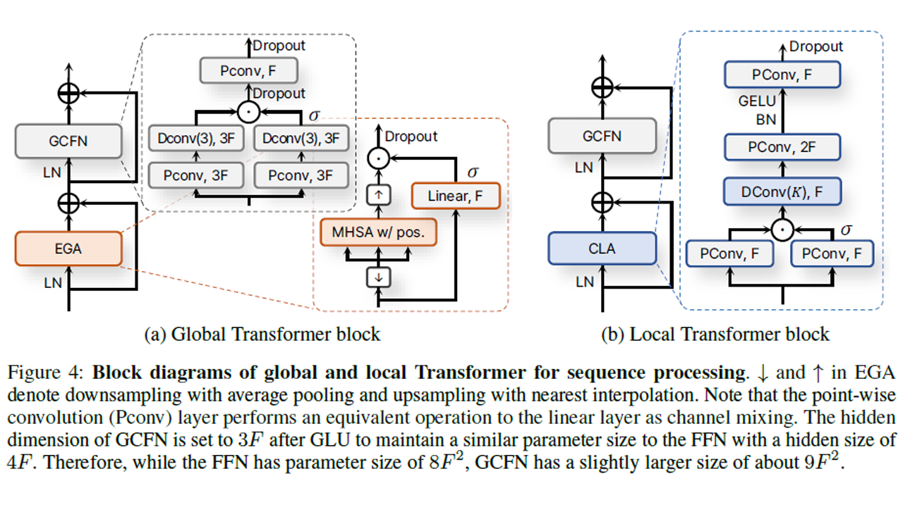
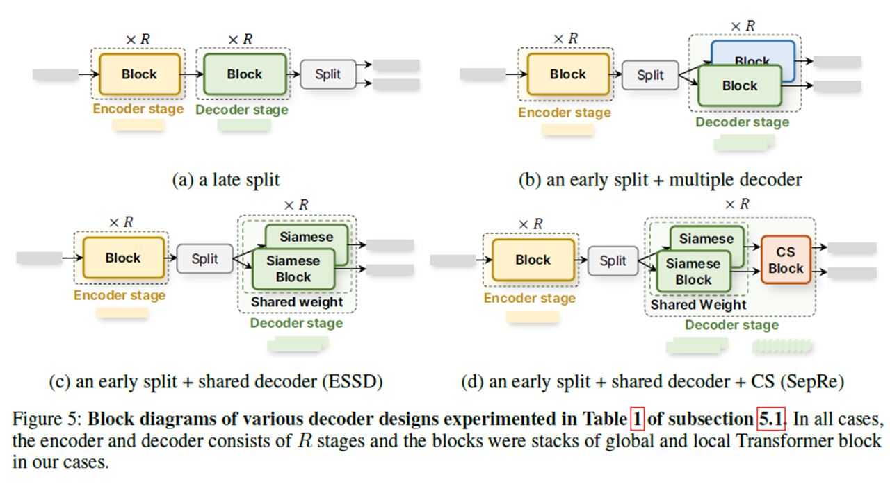

First image

Second image

Third image

Fourth image

Since the recent success of a time-domain speech separation, further improvements have been made by expanding the length and channel of a feature sequence to increase the amount of computation. When temporally expanded to a long sequence, the feature is segmented into chunks as a dual-path model in most studies of speech separation. In particular, it is common for the process of separating features corresponding to each speaker to be located in the final stage of the network. However, it is more advantageous and intuitive to proactively expand the feature sequence to include the number of speakers as an extra dimension. In this paper, we present an asymmetric strategy in which the encoder and decoder are partitioned to perform distinct processing in separation tasks. The encoder analyzes features, and the output of the encoder is split into the number of speakers to be separated. The separated sequences are then reconstructed by the weight-shared decoder, as Siamese network, in addition to cross-speaker processing. By using the Siamese network in the decoder, without using speaker information, the network directly learns to discriminate the features using a separation objective. With a common split layer, intermediate encoder features for skip connections are also split for the reconstruction decoder based on the U-Net structure. In addition, instead of segmenting the feature sequence into chunks and processing as dual-path, we design global and local Transformer blocks to directly process long sequences. The experimental results demonstrated that this separation-and-reconstruction framework is effective and that the combination of proposed global and local Transformer can sufficiently replace the role of inter- and intra-chunk processing in dual-path structure. Finally, the presented model including both of these achieved state-of-the-art performance with much less computation than before in various benchmark datasets.
The paper presents a novel approach to speech separation using an asymmetric encoder-decoder network named SepReformer. The goal is to improve the efficiency and performance of separating mixed speech signals into individual components. Traditional methods, like the dual-path model, segment long sequences into chunks, which increases computational load and complexity. The proposed SepReformer addresses these issues with a more direct and efficient approach.
The decoder uses a weight-sharing mechanism across multiple branches, similar to a Siamese network, to process separated features. This approach enhances the discriminative power of the network by ensuring that each decoder branch learns distinct characteristics of each speaker's features.
This module within the decoder allows interaction between features of different speakers, enhancing the network's ability to separate and reconstruct overlapping speech elements.
The network is trained with a multi-loss objective, where intermediate layers are optimized to progressively refine the separated outputs. This progressive reconstruction approach helps in achieving better performance by guiding the network to focus on discriminative learning at multiple stages.
The SepReformer model demonstrates state-of-the-art performance on various benchmark datasets, including WSJ0-2Mix, WHAM!, WHAMR!, and LibriMix. Key findings include:
The proposed SepReformer method offers a novel and efficient approach to speech separation by leveraging an asymmetric encoder-decoder structure, weight-sharing Siamese networks, and Transformer-based sequence processing. This results in improved separation performance with reduced computational requirements, making it a promising solution for real-time speech separation applications.
Our study focuses on 2-speaker mixture situations to assess our models in various model sizes and in extensive datasets including noise and reverberation. Consequently, we believe that further investigation is needed to validate more than 2-speaker mixture scenarios.
Additionally, an important future direction is to separate mixtures for an unknown number of speakers, as it is impractical to assume that the number of speakers to be separated is known in advance. Finally, although we experimentally validated our SepRe method, we believe that further investigation is necessary to understand its underlying mechanisms.
@article{
TBD,
title={TBD},
author={TBD},
journal={TBD},
year={TBD},
volume={TBD},
number={TBD},
pages={TBD},
doi={TBD}
}